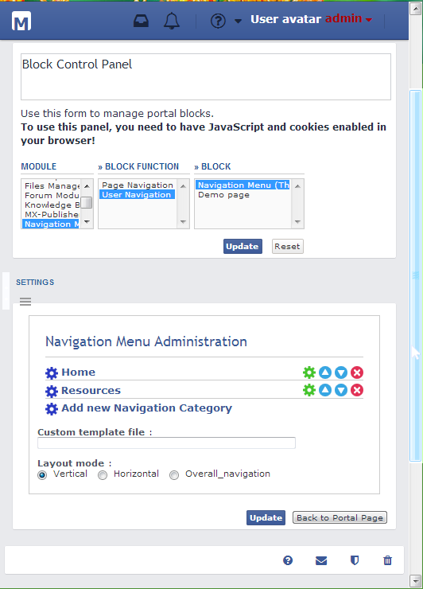
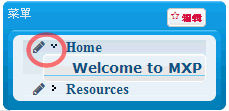

|
|
||||||
MX-Publisher CMS: Documentation
Documentation for the only fully modular CMS for phpBB
Table of Contents
|
We provide Online Documentation, Knowledge Base and Support Forums to help you use our system. Please visit our project site to learn more. |
-
Installing, Upgrading, Unistalling
-
Upgrading Introduction
Methods of Upgrading
-
Administration Control Panel
-
ACP-General
-
ACP-Management
-
Page Settings
-
Size of Columns
-
Adding a Block to an MXP Page
-
Page Administration
-
Portal-Modules
-
Block Administration
What is it?
Adding a block
-
Module Administration
What is a module?
Installing a module
Using a module
Deleting a module
Upgrading
Where can I find modules?
-
Content-Management-System
Generate Cache
What is it?
How do I use it?
-
Meta Tags
What is it?
How do I use it?
-
Objects Integrity Check
What is it?
-
phpInfo
What is it, and how can it help me?
-
Themes
Introduction to Themes
Installing a PhpBB-based theme
Installing an MX-based theme
Non prosilver or subSilver themes
1. Adding a new CMS Page
2. Navigation Menu- Creating a category
1. INTRODUCTION
1a. About MXP-CMS
MX-Publisher Portal-CMS
is a fully modular portal and Content Management System for phpBB. It
features dynamic pages/blocks/themes by means of a powerful yet
flexible Administration Control Panel (ACP). MXP's former name
MX-System since 2001 a popular open-source bulletin board
community solution written for phpBB
in PHP.
Our C.M.S. solution works standalone or with phpBB2/phpBB3 by using
integrated features and functions. MX-Publisher currently supports the
MySQL and PostgreSQL databases. MX-Publisher CMS is the classical phpBB
portal add-on, improved and enhanced for every version
released since 2001.
1b. What is MXP for?
The MX-Publisher is a script standalone from your comunity solution that gathers/fetches, and manages, your domain information. If you want a site based around your phpBB forums, MXP still can maintain all of your present domain info, as a portal in the root of domain. Thus, you have wisely chosen MXP.
1c. Why
not MXP?
MXP is not a phpBB extension that can be installed inside the comunity solution but in a separate folder usualy in the top of the domain.
Also, MXP is meant as a content management system (CMS), with pages that contain blocks. If you require a system that allows special posting (and you do not wish to use portal blocks to parse data from the phpBB forum side of your site), then MXP may not be for you; you may want to look up alternative systems that specialize in your needs. For example, MXP is not meant as a blogging tool.
2. INSTALLATION
2b. Requirements
MXP as a CMS tool does have some requirements which must be met before you are able to start your installation.- A webserver or web hosting account running on any major Operating System with support for PHP.
- mySQL4 or mySQL5+ or postgreSQL 7.1 Database (Latest mySQL5 or postgreSQL version recommended)
- PHP 5.4.0 and later versions (Latest PHP 5.6.xx recommended).
- phpBB 2.0.x (Latest phpBB2 recommended) (Required in MX-Publisher 2.8.x. Optional in MX-Publisher 3.0.x)
- phpBB 3.0.x (Latest phpBB3/Olympus recommended) (Optional in MX-Publisher 3.0.x)
- The
following are optional items you may require depending
on your local machines setup and/or your server or web-hosts control
panel support and features.
- FTP Program
- a HTML (Hypertext Markup Language) Editor
2c. Download Packages
Now, before you attempt installing anything, make sure you have downloaded the most recent version of MXP. You can always find it here:
http://www.mxpcms.sf.net/forum/viewtopic.php?t=10949
If you are sure you have done that, then download this, if you haven't already, to your computer. Make sure that you know which directory on your computer you have uploaded it to.
2d. Uploading
Now, once you have downloaded the whole MXP Core archives, unzip it using 7ZIP or some other file decompression utility onto your hard drive. Now, you must upload the folder /Core/, wherever it's on you hard drive, into the web. To do this you need an FTP client such as SCP, WinSCP, AceFTP, CuteFTP, or WS_FTP. I recommend WinSCP for its features to save sessions and TotalCMD for its ease of use. Whenever you've picked which one, open up your FTP client. Make sure you have the upload settings to "auto-detect" if it has it. PHP, INC, TXT, and HTML files should be uploaded in ASCII mode, while TPL, JPG, GIF, and other graphics files should be uploaded in binary mode.
In the following screen shots of an FTP client, I will be using AceFTP freeware. This does not mean that this is the only FTP client, it just means it's the one I'm using. Below are some links to FTP clients:
www.visicommedia.com (AceFTP, freeware- register first)
www.cuteftp.com (CuteFTP, shareware 30-day)
www.ipswitch.com (WS_FTP LE, freeware for educational purposes)
For portable use of WinSCP see
http://winscp.net/eng/docs/portable
The package includes two executables, .exe and .com. For details see
http://winscp.net/eng/docs/executables
WinSCP homepage is http://winscp.net/
Okay, if you've set your FTP client upload mode to auto, so that all PHP, INC, TXT, and HTML files are uploaded in ASCII mode, while TPL, JPG, GIF, and other graphics files are uploaded in BINARY mode, you're set to go.
- Code: Select all
/your/path/to/public/html/YOUR_PORTAL_NAME/
- Code: Select all
/your/path/to/public/html/YOUR_FORUM_NAME/
You can alternatively install MX-Publisher in your root directory (which can be accessed via http://www.yourdomain.com/ while your forum can be installed in a folder along with the MXP folders (ie it'd be located in).
- Code: Select all
http://www.yourdomain.com/phpBB2/
(look at the next page for this screenshot)

As you can see you should highlight, on the computer/local side, the /MXP/ folder, wherever it's located on your Hard Disk. So, simply click on the button that's circled in the screen shot, or wherever it is for your FTP client. It's a pretty big upload (a little more than 1MB) so depending on your connection, you'll have to wait a while. Once you're done, you should see the index of the location, on the right hand side (that's been uploaded), of the /MXP/ folder. If this is confirmed, then double click on /MXP/ to go into it. Now, you must CHMOD two things: the /MXP/cache/ directory and the MX_meta.inc file. What this means is you're giving read/write access to the MX Portal, which is required. Note: no security hazard exists with this. First, we're going to CHMOD the /MXP/cache directory. So, to do this, depending on your FTP client, you must right click on the folder /MXP/cache/, click on Properties, and put in the CHMOD value of 777. If a number text box doesn't exist, simply check off all "Read", "Write", and "Execute" under all users ("Owner", "Group", "Everyone"). Of course the user names vary from FTP client, but try to find something similar. So, if it's done, your little log box (if you have one) should say something like "SITE CHMOD SUCCESSFUL - 777". After that, follow the same steps to CHMOD mx_meta.inc. And you're done uploading things to your site onto the Internet.
If you move the phpBB folder into another one before installing MXP, the phpBB configuration
(the file) must also be modified to match the new phpB location.
- Code: Select all
/phpbbroot/config.php
Note #2
The MXP and phpBB installations use completely differing config.php files. Do not confuse them and mix them together! They are two different files.
Note #3
If you plan to switch to phpBB mode later (after a fresh standalone installation) you have to set the phpBB relative path manually in the MXP Admin Control Panel.
Unzip the distributed MXP files and upload.
SPECIAL NOTE
MX-Publisher needs write access/permissions to the cache folder and the mx_meta.inc file.
## CHMOD (0777) THE FOLLOWING FILES/DIRECTORIES:
- Code: Select all
## - mxroot/cache/
- Code: Select all
## - mxroot/mx_meta.inc
2e. Configuring Install
Now, to install MXP, you must visit the link in your favorite browser. Go to the URL (web address) http://www.example.com/ or http://www.example.com/mxproot/ . From there it will redirect you to the MX Install iWizard page. Replace "mxproot" with whatever name you had for your MXP folder, which contains all of the MXP files and folders.
If this fails go in your browser, and call:
- Code: Select all
http://www.yourdomain.com/install/mx_install.php
MXP - With phpBB2 / phpBB3
With the installer, all of the values should already be filled in, and you should be set up to go and click "Install." However, you should go over the information filled in. If you definitely need something changed, then go ahead and see this document for details on how to set the installer to allow you to enter your own settings. Note that you should only do this if you know what you are doing.
MXP - standalone (INTERNAL)
This option will allow you to get your MXP install up and running without any need of 3rd party software - usually phpBB forum - it'll get your demo default website up and running quickly without the forum part. At a later stage you can still choose from with the Admin Control Panel to select a type of phpBB forum software which you have installed - of which MXP supports two types; phpBB 2 and phpBB 3.
The text fields are filled out with the descriptions of the info you're supposed to put in. At the top (it's not in the screens hot) you should select "install" if you're installing MX for the first time. Then, pick which DB software your server uses (mySQL or postgreSQL). Then, fill in the info.
You then need to fill out the installation configuration form which consists of the following:
Database Server Hostname/DSN:
This is the hostname of your DB server. Most of the time this is "localhost" (without the quotations), so type in that.
Your Database Name
This is pretty much self-explanatory. If you have mySQL, you probably have a DB name. Fill in the blank with the DB name.
This will be either the database which phpBB already uses or if you are planning on an entirely internal (standalone) install you'll need to create a new one with your preferred db management tool. Sometimes the database name here requires a prefix of the domain name - which for example might be- Code: Select all
www.testsite.com
- Code: Select all
data1
Database Username
This usually is the username you use for your web hosting/server. Fill this out correctly... casing probably counts.
You need to enter the database username which was auto-created when your database was created OR create a db user, with appropriate db permissions. Again this may require the website name as a prefix to the username.Database Password
This is basically just the password to your DB username.
The password unlike the two previous entries which required your website as a prefix before either the database name or the database username DOES NOT need a prefix before it - enter this as per the normal password of the database user.MXP Prefix in DB
This is the table prefix that will appear in your DB. ie MX_blahblah. By default it should be mx_, so type that in.
This is the prefix name for the database - so when you browse through phpmyadmin you'll see it more clearly plus it prevents table mixups between other things in your database (such as phpBB) which has a database prefix of phpbb_. Also you may want to change this if you want several instances of MXP present within the same database; for example mx2_ - this is not something highly recommended due to export and backup functions, extraction of data however.phpBB prefix in DB
Now, this is very important. You must
figure out what
prefix
your phpBB forums used, and fill it out. In most cases it's phpbb_,
so use that, unless you know otherwise. MXP will search in all tables
preceded by "phpbb_", where it will get its info.
phpBB relative path
This is the directory path to /phpBB/ (or wherever your forums are located), relative from /MXP/. This should be ../phpBB (or wherever your forums are located). Note the two periods. This tells MXP to go back a folder, then into /yourforums/.
Full Portal URL
This is pretty much self-explanatory. Type in the whole URL location of your /MXP/ folder. It should be something like www.example.com/MXP.
Full PhpBB URL
This is again pretty much self-explanatory. Type in the whole URL location of your /yourforums/ folder. It should be something like www.example.com/phpBB/.
Note: if you are unsure about any of the above settings check your phpBB config file.
MXP Admin UsernameYou may or may not want to consider keeping this the same as your phpBB forum install credentials for simplicity and to avoid confusion when switching around your website.
MXP Admin Password
Again - you may or may not want to consider keeping this the same as your phpBB forum install credentials for simplicity and to avoid confusion when switching around your website.
Re-enter MXP Admin Password
Repeat the password you have just entered.
Now That you have the correct information present you can click the Install button to continue, at this stage you'll be told you can download the config.php for you to upload directly to your sever into the MXP directory so this is your next step - click the button to download the config.php file and place it on your server.
And that's pretty much all. At the bottom, click on "install". You should be brought up to a page confirming your configuration info. Green words next to the text box means it's fine, but if there are red words with an error message, you must correct it. If you got an error, click on "Revalidate Settings." If everything is fine and dandy, now click on "install". The page'll load up, and you'll see a gray page with a plain text message on top saying something about writing to config.php, now write-protecting it. If it says that, do whatever it says. If everything worked, then it'll say at the bottom "please delete the /install and /contrib directories". Delete these folders from /MXP/, to prevent any security hazards/mess-ups, using the FTP client you used earlier to upload MXP. And now, you're done! Good job. You've just installed the MXP CMS Portal. Now, continue on reading on how to configure MXP for your uses.
These will tell you that you need to now delete two directories on your server:
- Code: Select all
/contrib/
- Code: Select all
/install/
2f.
Advanced Installation
To choose your own configuration instead of the installer's
default
suggestions, open up the install/mx_install.php file in your favorite
PHP or source code editor and perform the following code changes to the
file:
Find
- Code: Select all
define('INSTALL_READONLY', true);
- Code: Select all
//define('INSTALL_READONLY', true);
The text fields are filled out with the descriptions of the info you're supposed to put in. At the top (it's not in the screens hot) you should select "install" if you're installing MX for the first time. Then, pick which DB software your server uses (mySQL or postgreSQL). Then, fill in the info. Here's a description of each:
Note: The install script creates the MX-Publisher config.php file. If for some reason the install fails, you may need to remove the generated config.php manually before retrying the install. Also, if you feel like doing a fresh reinstallation, you will need to remove the previous MX-Publisher config.php file.
Failure to do this action will result in a failure to install MXP and your install script will not update correctly.
Also, some webservers deny the installer the rights to edit the
- Code: Select all
config.php
If you have any other errors regarding config.php (you shouldn't), go here. 2d)
Don't forget to remove the install/ and contrib/ folders after a successful installation! Otherwise, this could mean a potential security hole.
3). Installation Complete! Now enter the MX-Publisher ACP and configure the portal. The user interface is intuitive. For further information, visit some of our documents and Knowledge Base articles on ours DOCS page at www.mxpcms.sourceforge.net.
2g. Upgrading
Note: If upgrading from MXP-System 2.704, the development team has renamed most of the core images and moved them to the template's folder. This will affect navigation images in the menu, and Page Administration. You have to update image names manually!! There is a PSD template file in the MXP Download area with all MXP graphics if you want to develop your own styles.
Note: If you are upgrading from MX-Portal 2.7.x upgrade at least to mxBB 2.7.7 or MXP 2.7.8 and You can try to MXP 2.8.4, beafore next spep, backup and keep config.php and modules that are not included in the core.
Upgrading your installation is only a matter of a few steps to take and simple awareness of one or two facts.
- Download the full package from the Downloads Page at http://mxpcms.sourceforge.net/
- Unzip/unrar the contents - making sure the directory integrity remains intact.
- Open your FTP client and connect to your MXP directory
- Upload all files and folders except for config.php.
- Now visit the
- Code: Select all
mx_install.php
- This will start the install wizard for your upgrade - follow all the steps then click Finish.
- Remove the
- Code: Select all
/install/
- Code: Select all
/contrib/
2l. Uninstalling
We're sad to see you don't want to use MXP
anymore! But, if
you
must, here are the steps you must take in order to successfully
delete all MXP-related content.
-
In your favorite FTP client, delete the whole folder /MXP/ and everything in it.
-
Go into your database administration client (usually if you have mySQL, it'll be phpMyAdmin) and delete ALL tables preceded by mx_, or whatever beginning you specified when you installed MXP.
-
You're done.
3. CONFIGURING THE PORTAL FOR YOUR NEEDS
3a.
Administration Panel
.
The General Administration will allow you to perform general portal administration tasks. This includes at the moment general portal configuration, management and system tool.
3a1. General - Configuration
There are more tabs used for General Configuration: General Settings, Session Backend, Cookie-Session Settings, Style Settings, EMail Settings, Info.General Settings
Portal Name is called the first field because the text which you put in here will display to all your site visitors on the top bar of any browser visiting your site. This is simply a way of personalizing your site and has no other real function other than to give all the pages under your portal or site a name.The General Administration will allow you to perform general portal administration tasks. This includes at the moment general portal configuration, management and system tools
Portal Description - A little text to describe your website.
Enable portal - Handy switch, when reconstructing the site. Only admin is able to view pages and browse around normally. While disabled, the message below is displayed. Portal disabled message We are currently upgrading this site with latest MXP software.
Portal disabled message - A little message to show when the portal is disabled.
Domain Name - The Domain Name of your website.
Server Port - The port your server is running on, usually 80. Only change if different.
Script path - The path where MXP is located relative to the domain name.
MXPDate Format - The syntax used is identical to the PHP date() function.
MXP System Timezone - The CMS's Timezone.
Enable GZip Compression - Enable GZip Compression in MXP.
Use Block Cache
- Block data is cached to individual cache/block_*.xml/php files. Block
cache files are created/updated when blocks are edited.
Use mod_rewrite
-If you're running on an Apache server and have mod_rewrite activated,
you may rewrite URLS; for example, you can rewrite pages like 'page=x'
with more intuitive alternatives. Please read further documentation for
the mx_mod_rewrite module.
Session Backend
Cookie-Session Settings
Style Settings
EMail Settings
Info
3a1a. Management
This page offers you a way of configuring the location of the main contents of your website, such as the URL to your forum and the full URL of your portal.
This panel is where the modules, portal pages and blocks can be managed:
To
add new pages go to pageCP (Page Control Panel), it's important to
chose a page template with the numbers or colons or you can add them
manually later.
Then to add content to the pages you go to
BlockCP before and create some new blocks or use the demo blocks that
are generated with the modules .pak files or when you first install the
portal.
You may need for blocks to install new modules and you
have an option to do that automatically in Modules Setup section or you
can add parameters and create tables manually, this for modules
developers.
To use this panels, you need to have JavaScript and cookies enabled in your browser!
3.1. Modules Setup - Use this form to manage modules: installation, upgrading and module development.
3.2. Module Control Panel - Use this form to manage modules: block functions (parameters) and portal blocks.
3.3. Block Control Panel (BlockCP) - Use this form to manage portal blocks.
3.4.
Page Control Panel (PageCP) - Use this form to add, delete and
change the settings for Portal Pages and Page Templates.
3a. Administration Panel
3a1. Portal- General
3a1b. Page Setting
3a1b1. Size of Columns
Note: This option was included in the Core MXP only for older versions and is decribed here for educational porposes only.
The purpose of Page Setting is to give you direct
access to
all
of your pages, their content, and the configuration of the content.
For each page, you can have a certain number of
columns (not
rows). A common choice for using columns is to have the navigation
menu, on the far-left side, to move from each MXP Page to the next.
Then, the custom/varying content on the other columns depend on your
choice.
The size of the columns can be edited. To do this, you must click on the "Page Setting" under the category "Portal- General" in the administration control panel. Then, at the top of the page, right below the heading "Page Administration," select from the drop down box the page you want to edit. Then, click the button marked "Change Now". You should wait until the page loads. Next, you should pick the column (if it is already created) you want to edit, and in that row, select "Edit". From there you can choose the name of the column, for your own purposes to distinct one column from another. Now, to change the column size. The column size can be determined by either the percentage of the page, or in pixels. If you choose to use percentage, make sure the total percentages of all the page's columns add up to 100%. The column's size in pixels can be anything you wish. When you're finished, click "Update Now".
3a. Administration Panel
3a1. Portal- General
3a1b. Page Setting
3a1b2. Adding a block to an MXP Page
The Administration Control Panel (ACP) in MXP 3.0.x contains all five options of Page Administration in Page Control Pannel. For prosilver style there are five round colored buttons that You can use to Preview, Edit, Configure Settings, Set Permissions, and Delete a Page.So, if you have already created an MXP Page under New Page Administration, you must want to put content on that page now. To do this, you must first start off in the ACP. From there, click on the "Page Control Pannel" under the "Portal - General" category in left page or in category tab depending on the ACP version.
You should be here:
You should now see the above screenshot, only with no columns, or any content for that matter. Now, before you add a "block," or a special content section, you must add a column(s) to input it into. To do this, scroll to the bottom, and type in the textbox located directly to the left of the button "Add New Column" the name of the column. This will not show up to anyone other than admins... as this is solely for your identification purposes. When done, click on the button "Add New Column." You will be brought up to a page asking the size of the column. Follow the instructions above about how to edit a column size. Then, click on the "Submit" button.
Now, under a
drop-down
selection box,
select a module and a block you want to add. Highlight it, then click
on it.
Then,
click on "Add New Block".
You've just added a new block to
your MX Page. Now, if you want to edit the settings of this block, if
you haven't already, click on the "Click here to go back to
Portal Configuration."
Then, find the block name and click on
"Settings"
if it applies. If it isn't there, most likely
you will have to go to the MXP Page containing that block, and there
should be an "Edit"
button similar to the "Edit"
button for the page located somewhere on that tab with the block name.
3a. Administration Panel
3a1. Portal- General
3a1c. Page Administration
The Page Administration area of MXP ACP allows you full control over each and every individual page you have setup using MXP. From here you will be able to see at a glance from left to right the image you decided to use / not use as the case may be and the set name for your pages which can be changed from within the Edit feature. Using the Edit feature allows you to manipulate you page to much greater extent.
3a. Administration Panel
3a1. Portal- General
3a1c. Page Administration
3a1c1. Adding a new MXP Page
The MXP has the feature to create more than one page, allowing various content within the portal, while still maintaining the "portal look" and navigation.
To add a new page to MXP, first start out from the Administration Control Panel (ACP). Then, under the "Portal- General" category, click on the link "Page Administration" to go to it.
You should see this:
In MXP 3.0.x pages can be created an under New Page Administration,
as we can see in 3a1b2
and you
can skip this picture to 3a1c1 were
there is "Add New Page" or "Update" if the page has been already
created.
You may notice some
blurred text in
the screenshot. This is because MXP
Documentation Team takes the
screenshots from a test portal, and we have a lot of different pages.
The blurring assures you that it is okay even if you don't have a
certain element on the page.
From there, at the bottom there is an empty text box, with a button denoted as "Add New Page." Type in the name of the page you desire in that text box, then click the "Add New Page" button. You should be at the page administration page, with the configuration of the page. Some included on this page are, but not limited to: Page ID, Page, Icon, and Permissions. You should fill in all of this info. Info about each of these are below:
Page
This is the name of the page. If you followed the instructions above, it should already be filled in.
Page ID
This is the page ID URL. This shouldn't concern you too much, and by default it already specifies it an ID number. Don't change this number unless you know what you are doing.
Page Icon
Most MX pages commonly are located within the Navigation Menu. To distinct each page and make it aesthetic, you can specify a small icon to it. This can be any image (though only JPG and GIF are recommended). By default, the icon directory should be under the directory /MX/templates/subSilver/images/. If you use a different template/theme, then you should change this accordingly.
Page Header
This is the name of the file that appears on top of every page. By default it is overall_header.tpl, which is located under /MX/templates/subSilver/. You should not change this unless you have created your own header file. If this applies to you, then upload your custom header file into /MX/templates/subSilver/, then change the Page Header file here.
Permissions
This section is for you, the administrator, to decide who has access and/or power to this page. I recommend you to leave the "View" category to giving permission to ALL people, registered or not. But, the "Private" group is the one that is up to you. These people can do anything you let them do, such as managing the page, etc. You should change this to "Admin" so that only you, not moderators, can edit it. If you already have created a usergroup (s) for specific control to this (for my forum I created a "Knowledge Base" usergroup so that they can only control the Knowledge Base), then you can choose to have the "Private" group be assigned to this usergroup.
After filling all of this info, if not already, then you are done! Double check all of your info, then click the button "Update." You're done adding a new MX Page to your portal. Now, if you want to add your newly added MX Page to the Navigation Menu on your portal index, you can do so by adding the columns for the new page. Column 1 is where you should add the Navigation menu. Column 2 is where you want to add a block such as: calendar, photo album or text blocks.
Take a look from the previous screenshot. Once you've created a new page, you should click on that icon, which will take you to a new window. There is where you add your columns, and for each column you add the blocks.
Now, say you added the photo album to your newly created page and put it in Column 2, and you added the link to the Navigation menu, which you added to Column 1. Now, you'll want to edit the link in the Navigation Menu for the photo Album. You can do this by using the edit button on the main portal page.
You want to make sure that whatever the page ID is matches the menu URL link to external page. The way you find the "menu URL link to external page" is after hitting the edit button, click edit for the, we'll say for example: "photo album". About middle way down that window, you'll see the following:
Menu URL
- link to external page
If the Page ID is 3, you'll want to type in "index.php?page=3" (without the quotes).
Also, in that window, the only thing that you need to be concerned with is:
Menu Name
Name this what you want. Whatever name you give it will show up in the Navigation menu
Menu Icon
An example is: icon_links.gif; or whatever icon you choose to use.
Menu URL
-
link to external page
(see above example for this.)
The Administration Control Panel (ACP) in MXP 3.0.x contains all five options of Page Administration in Page Control Pannel. For prosilver style there are five round colored buttons that You can use to Preview, Edit, Configure Settings, Set Permissions, and Delete a Page.We can see in the bellow picture 3a1c1 that the option to add or update a MXP Page under New Page Administration, that in older versions of ACP as we ca see in picure 3a1b2 was in "Page Settings" were there is "Add New Page" or "Update" if the page has been already created and in latest version we have them in "Page Control Pannel".
3a. Administration Panel
3a1. Portal- General
3a1c. Page Administration
3a1c2. Navigation Menu- creating a category
The Navigation Menu block should be on the front page of your portal, to let your users/site browsers to get around your portal. Now, let's say you have a lot of MXP pages. You want to have all of these linked in the Navigation Menu so that people can see them, yet you want to organize them more. You can achieve this by categorizing these pages. Doing this allows for separate categories of pages. Make sure that you have the MXP pages created. To do this, start out at the front portal page. Then, on the Navigation Menu block, click on the "Edit" button.
You should then be at this page:

Type in the name of the category you want in the text box, located near the "Add new category" button. You probably also have noticed a drop-down selection box with the word "unfolded." In short, since you have more than one category in the navigation menu, you will want to either a) see all the page links, under the category, or b) see the category, but you will have to click on a button to see all the pages. Choice a) looks like this:

The first picture showed a category, with pages under it, unfolded. This means the category, with all of its pages, are shown. The second picture shows a folded category. You can see the category name, but not the pages within it. Do you see the red circle in the second picture? This is the button used to either fold or unfold the category. Now that you know the difference between the two, take your pick of either having this new category folded, or unfolded. When you're done with that, click on the button "Add new category." You should have been brought to a redirecting page with the text "Menu and Category information updated successfully" and below that, "Click Here to return to the Index." Then it will automatically go to the Index page. You've completed adding a new category. Now, you will have to add your MXP Page (s) under this category if applicable.
3a. Administration Panel
3a2. Portal-Modules
3a2a. Block Administration
3a2a1. What is it?
The Block Administration in the administration control panel allows you, the administrator, to view all of the blocks that are part of your portal. Blocks are literally blocks that you can control to be on which MX Page. Blocks are named whatever you want, but when you do this, you must assign a function to the block. For example, if you wanted a "Random Daily Quote" block, then you would create a block named "Random Daily Quote," but the MX function that it would use would be "MX-Quotations." The blocks your portal can have depends on what modules you have installed.
3a. Administration Panel
3a2. Portal-Modules
3a2a. Block Administration
3a2a2. Adding a block
So, you want to add a block now? Well, first, you
must make
sure
that you have whatever modules you want this block to be for,
installed. If you're sure it is, start by going into the
Administration Control
Panel (ACP). Then, under the category "Management" click on
"Block Control Pannel"
You should
be here:
In the textbox, type in what you want the block's name to be. This is the heading that's going to appear on the MXP Page you put this on. When you're done with this, click on the button labeled "Create New Block". You now should be at a page with labels, and text boxes. Below are descriptions of each.
Title
This is the name of the block. It should already be filled in with what you wanted if you followed the instructions above. If for any reason you want to change it now, do so.
Description
This is a short description of the block, which only admins can view from the ACP. It is for you to distinguish between other blocks. Fill it in with the information you will remember it by, and the function it does.
Function
This is the function that this block performs. Choose the function you want it to perform from the drop-down selection box. Make sure you have picked the correct one. If a function you want, that you know is there, isn't, then it must mean that you haven't installed it's corresponding module. You must install the module, then restart this process. Do not continue until you have installed the desired module.
Permissions (Sub-Category View)
This is the permissions control for this block. This controls which type (s) of users can view this block. By default it is "anonymous," which means anyone, registered or not, can see it. It is recommended that you leave it at this, so new people who are viewing your site can see it. They can register later.
Permissions (Sub-Category Edit)
This is the permissions control for block editing. Whoever has permission to this can edit the block the page is located in. By default it is "anonymous" which means anyone can edit it. This is obviously not what you want. You should change it to Admin, so that only you can change it. Though, if you have created a usergroup (s) designated for this block... then choose that usergroup's name.
So, if you have filled in all of the above, click on "Create New Block." You've just created a new block. Good job. Now, you must add this block to an MX Page, so that you can actually see it. Go to under the category "Page Setting" to figure out how to add a block to an existing MXP Page.
3a. Administration Panel
3a2. Portal-Modules
3a2b. Module Administration
3a2b1. What is a module?
The MXP CMS is a modular extreme content management system. This means it's made up of modules; each module is designed to do something specific. For example, the mx_links module provides the site with a way to add and organize links to other sites, as well as allowing users to submit their own links. Chances are you have already used at least two modules that come with the core: these are the Last Message and Text Blocks modules. You can add and download modules from www.mx-system.com or from a range of third parties and there are plenty to choose from.
3a. Administration Panel
3a2. Portal-Modules
3a2b. Module Administration
3a2b2. Installing a Module
Installation of a module is designed to be simple. Once you have downloaded the module you wish to use, simply place the module folder in the folder called modules. You will already see some modules that come with the core in there. Once the module has been copied to the folder, access the MX administration control panel followed by module administration. You should be here:
To install a module, click Install Module button.A list of modules that are in the /MX/module/ folder will appear select the module you wish to install and click submit.
By hitting submit, MXP is adding the module information to the database, as well as adding new tables the module may need, a list of these changes will appear.
If you get some Errors, Already Added or Updated messages, relax, this is normal when updating mods
Here is where you should be before hitting "Submit":
Progress report- add module (51, Forum Module, modules/mx_forum/)
[db...ok]
----------------------------
- add function (51, 53, FAQ (Forum))
[db...ok]
---> Now get blocks_ids:
[db...ok]
- add block (33, FAQ (Forum), Demo block)
[db...ok]
---> Now get blocks_ids:
[db...ok]
----------------------------
- add function (51, 54, GroupCP)
[db...ok]
---> Now get blocks_ids:
[db...ok]
- add block (34, GroupCP, Demo block)
[db...ok]
---> Now get blocks_ids:
[db...ok]
----------------------------
- add function (51, 55, phpBB)
[db...ok]
- add parameter (55, 103, Source_phpBB_Forums)
[db...ok]
---> Now get blocks_ids:
[db...ok]
- add block (35, Index, Demo block)
[db...ok]
---> Now get blocks_ids:
[db...ok]
+ (Source_phpBB_Forums, 103, 35),
----------------------------
- add function (51, 56, Login)
[db...ok]
---> Now get blocks_ids:
[db...ok]
- add block (36, Login, Demo block)
[db...ok]
---> Now get blocks_ids:
[db...ok]
----------------------------
- add function (51, 57, Memberlist)
[db...ok]
---> Now get blocks_ids:
[db...ok]
- add block (37, Memberlist, Demo block)
[db...ok]
---> Now get blocks_ids:
[db...ok]
----------------------------
- add function (51, 58, ModCP)
[db...ok]
---> Now get blocks_ids:
[db...ok]
- add block (38, ModCP, Demo block)
[db...ok]
---> Now get blocks_ids:
[db...ok]
----------------------------
- add function (51, 59, Posting)
[db...ok]
---> Now get blocks_ids:
[db...ok]
- add block (39, Posting, Demo block)
[db...ok]
---> Now get blocks_ids:
[db...ok]
----------------------------
- add function (51, 60, Private Messages)
[db...ok]
---> Now get blocks_ids:
[db...ok]
- add block (40, Private Messages, Demo block)
[db...ok]
---> Now get blocks_ids:
[db...ok]
----------------------------
- add function (51, 61, Profile)
[db...ok]
---> Now get blocks_ids:
[db...ok]
- add block (41, Profile, Demo block)
[db...ok]
---> Now get blocks_ids:
[db...ok]
----------------------------
- add function (51, 62, Search)
[db...ok]
---> Now get blocks_ids:
[db...ok]
- add block (42, Search, Demo block)
[db...ok]
---> Now get blocks_ids:
[db...ok]
----------------------------
- add function (51, 63, ViewForum)
[db...ok]
- add parameter (63, 104, Source_ViewForum)
[db...ok]
---> Now get blocks_ids:
[db...ok]
- add block (43, ViewForum, Demo block)
[db...ok]
---> Now get blocks_ids:
[db...ok]
+ (Source_ViewForum, 104, 43),
----------------------------
- add function (51, 64, ViewOnline)
[db...ok]
---> Now get blocks_ids:
[db...ok]
- add block (44, ViewOnline, Demo block)
[db...ok]
---> Now get blocks_ids:
[db...ok]
----------------------------
- add function (51, 65, ViewTopic)
[db...ok]
- add parameter (65, 105, Source_ViewTopic)
[db...ok]
---> Now get blocks_ids:
[db...ok]
- add block (45, ViewTopic, Demo block)
[db...ok]
---> Now get blocks_ids:
[db...ok]
+ (Source_ViewTopic, 105, 45),
[import succesfull]
| Module Installation/Upgrading/Uninstalling Information - module specific db tables |
|---|
| This is a fresh install! This is the result list of the SQL queries needed for the install/upgrade [Added/Updated] line: 1 , DROP TABLE IF EXISTS mx_phpbb_plugin_config [Added/Updated] line: 2 , CREATE TABLE mx_phpbb_plugin_config ( config_name VARCHAR(255) NOT NULL default '', config_value varchar(255) NOT NULL default '', PRIMARY KEY (config_name) ) [Added/Updated] line: 3 , INSERT INTO mx_phpbb_plugin_config VALUES ('override_default_pages', '0') [Added/Updated] line: 4 , INSERT INTO mx_phpbb_plugin_config VALUES ('enable_module', '1') [Added/Updated] line: 5 , INSERT INTO mx_phpbb_plugin_config VALUES ('faq', '2') [Added/Updated] line: 6 , INSERT INTO mx_phpbb_plugin_config VALUES ('groupcp', '2') [Added/Updated] line: 7 , INSERT INTO mx_phpbb_plugin_config VALUES ('index', '2') [Added/Updated] line: 8 , INSERT INTO mx_phpbb_plugin_config VALUES ('login', '2') [Added/Updated] line: 9 , INSERT INTO mx_phpbb_plugin_config VALUES ('memberlist', '2') [Added/Updated] line: 10 , INSERT INTO mx_phpbb_plugin_config VALUES ('modcp', '2') [Added/Updated] line: 11 , INSERT INTO mx_phpbb_plugin_config VALUES ('posting', '2') [Added/Updated] line: 12 , INSERT INTO mx_phpbb_plugin_config VALUES ('privmsg', '2') [Added/Updated] line: 13 , INSERT INTO mx_phpbb_plugin_config VALUES ('profile', '2') [Added/Updated] line: 14 , INSERT INTO mx_phpbb_plugin_config VALUES ('search', '2') [Added/Updated] line: 15 , INSERT INTO mx_phpbb_plugin_config VALUES ('viewforum', '2') [Added/Updated] line: 16 , INSERT INTO mx_phpbb_plugin_config VALUES ('viewonline', '2') [Added/Updated] line: 17 , INSERT INTO mx_phpbb_plugin_config VALUES ('viewtopic', '2') [Added/Updated] line: 18 , INSERT INTO mx_phpbb_plugin_config VALUES ('other', '2') [Added/Updated] line: 19 , CREATE TABLE mx_topic_add_type ( topic_type_name varchar(64) NOT NULL default '', topic_type_id tinyint(4) NOT NULL default '0', topic_type_auth tinyint(1) NOT NULL default '-1', topic_type_active tinyint(1) NOT NULL default '0', topic_type_order tinyint(3) NOT NULL default '0', topic_type_color varchar(6) NOT NULL default '0', topic_type_image varchar(255) default NULL, topic_type_image_new varchar(255) default NULL ) [Added/Updated] line: 20 , INSERT INTO mx_topic_add_type VALUES ('announce', 0, -1, 0, -1, 'FF0000', '', '') [Added/Updated] line: 21 , INSERT INTO mx_topic_add_type VALUES ('sticky', 0, -1, 0, -1, 'FAD400', '', '') [Added/Updated] line: 22 , ALTER TABLE phpbb_topics ADD topic_type_active TINYINT(1) NOT NULL DEFAULT '0' AFTER topic_type [Added/Updated] line: 23 , UPDATE mx_module SET module_version = '3.0.3', module_copy = 'phpBB Integration Module. Based on phpBB' WHERE module_id = '51' |
Here is what the screen should look like
if
everything went perfectly:

The module should now be installed; if it has an Admin Control Panel component then you may need to hit refresh in your browser to see the new menus.
3a. Administration Panel
3a2. Portal-Modules
3a2b. Module Administration
3a2b3. Using a module
While each module is different, they do tend to have certain things in common. Modules are not normally used directly but rather through blocks. During the install the blocks that come with the module will also be installed and should be available in Block Administration. These blocks act just like normal, and can have privileges assigned to them, as well as being added and deleted to a page. Often block settings can be changed, on the block itself on the page it was set to. This is to allow non-admins with correct permissions to be able to edit blocks. Modules may also have a general administrative section; this will appear in the administrative area under "MX Modules". Changes to these may require a regeneration of the cache.
3a2b4. Porting phpBB EXTENSIONS
Found a phpBB Extension, but think its too
complicated to
install for phpBB, or youd rather have it for MXP, modularized, and
cool? ;
Well, heres ;some simple guidelines for porting
phpBB Exrensions to be MXP modules.
Requirements:
1: A
PHP Editor is preferred
and usually better because its syntax highlighting can give you a
warning on some accidental omitted code. ;
Click HERE
or HERE for Notepad++
for phpBB and MX-Publisher
or Search google.com for "Notepad++
for phpBB"
Click HERE
for PHPEdit Click HERE
for PHPDesigner
Both are free PHP editors. We recommend PHPDesigner for its many
features.
2:
At least SOME basic PHP knowledge, if youre just learning PHP, then try
to learn all the basic about functions and classes, and porting the
phpBB Extension will be teaching you in itself.
3:
A test site, preferably on your own computer to save bandwidth and
time. Click HERE for
Wampee which is a good example. Click HERE for EasyPHP. Also make sure
any errors that may occur during this process will not affect anything
else on the server, so if youre trying out this on your main site, be
aware of anything that could happen. Back up EVERYTHING
in that case.
4:
Overall knowledge and experience over MXP and phpBB. This will simplify
your troubleshooting.
5:
Having read the Module Development Guides HERE, especially
the paths and directory structure portions; if you
don't
understand something then refer to that. ;
6: Time
and patience. If you think you will be easily confused,
or get barely through the first couple of paragraphs and already are
confused, dont give up, just dont use this guide as a restraint;
everyone has their own methods of coding. If you think that too much
code will make you dizzy, either get your Tylenol out, or press the
back button now.
Finding the perfect Extension or OLD
ADD-ON MOD
Be aware that not all phpBB MODs can be
modularized. Modularizing phpBB MODs is only a good idea for add-on
MODs and extension for phpBB 3.1+ which add features, not edit the base
core files. So, for example, the National Flags by Rich McGirr
(RMcGirr83 ) would not be ideal to modularize because its
features are too heavily integrated into specific phpBB addon files;
however, for example, the Knowledge Base extension here would be easier
and more ideal to modularize , because its more of an add-on,
and the code changes to phpBB do not affect phpBBs internal workings
but loads the addon controller files via app.php. You'll have a VERY
easy time deciding if a phpBB extension is ideal to modularize or not.
If you're not sure feel free to post your question on whether or not
porting a certain extension is ideal or not in the Module Development
and Beta Release forums.
Analyzing
the phpBB Extension: First, you must
analyze this extension. Why modularize it if you've never
seen the code before? Analyzing this extension involves
actually installing it onto a clean, mostly un-MODded
board. Again, if you're doing this on your localhost
webserver, this simplifies things a lot.
A. So, let's take as example an extension in development named
mx_translator.
Note: You are
required
to download and install some modules mentioned in this example.
copy /www/Rhea/ext/orynider/mx_translator
to
/www/modules/mx_translator
mkdir admin
copy modules/mx_dev_startkit/admin/admin_devstartkit.php
to modules/mx_translator/admin/admin_translator_module.php
mkdir templates
copy mx_translator/styles
to mx_translator/templates
You can keep styles directory.
copy modules/mx_coreblocks/db_install.php
to modules/mx_translator/db_install.php
copy modules/mx_pafiledb/db_uninstall.php
to modules/mx_translator/db_uninstall.php
copy modules/mx_coreblocks/db_upgrade.php
to modules/mx_translator/db_upgrade.php
Rename every language directory as this:
copy modules/mx_translator/language/en
to modules/mx_translator/language/lang_english
You can keep old iso language directories.
Use Your PHP Knowledge and skills to edit this files and rebuild the
ported files so thta they can work.
B. Install the custom code by hand, namely, do the code changes
yourself to the phpBB core or extensions files.
So, if the custom code said to add a line to the constants.php file
that includes the constant, you would create a new modules/mx_modulename/includes/mx_constants.php
file based in this example on modules/mx_dev_startkit/includes/startkit_constants.php,
insert whatever it says.
For exmplae edit Your extension constants and new tables prefixing them
with "mx_".
//
---------------------------------------------------------------------START
// This file defines specific constants for the module
//
-------------------------------------------------------------------------
define( 'STARTKIT_CONFIG_TABLE', $mx_table_prefix .
'dev_startkit_config' );
Note that mx_translator taken here as example does not
require any tables.
Note that You can rename or move a include controller folder or core
phpBB extension folder to modules or addons or to use the extemsion
name: a. For orynider/pafiledb/controller/ we use
modules/mx_pafiledb/pafiledb/modules/ For orynider/pafiledb/core/
we use modules/mx_pafiledb/pafiledb/includes/
Note that mx_translator taken here as example does not
require include folders to be rename or move.
3a. Administration Panel
3a2. Portal-Modules
3a2b. Module Administration
3a2b4. Deleting a module
Sometimes it may be necessary to delete a module. This is done by first going to the Administration Control Panel (ACP), then to Module Administration. Here you will find a list of all installed modules. To delete the module simply click delete next to the module. Delete happens instantly but you will be asked if you want to permanently delete the module tables: by doing so you will lose the data that the module held. For example, all the links will be deleted from the mx_linksdb module. Once the module database information has been removed, you may simply delete the folder held in the module folder: for this example you would delete the folder /modules/mx_linksdb to finish the deletion of this module.
3a. Administration Panel
3a2. Portal-Modules
3a2b. Module Administration
3a2b5. Upgrading
Modules can be upgraded, and it is always advised that a user should use the most up to date module. While module upgrades will vary, the usual procedure is to overwrite the current module files in the module folder. Followed by Administration Control Panel (ACP), then to Module Administration, and pressing the "Upgrade Module" button, the procedure for upgrading is similar to installation. A list of modules will appear. Select the module you are upgrading and hit enter. As with installing a module the data which is being added to or changed in the database will appear. However unlike Installation some lines should appear Red warnings, this is normal with an upgrade and simply means the line was already in the database. The module should now be upgraded, however as certain modules may have specific upgrade instructions always read the help files accompanying the module.
3a. Administration Panel
3a2. Portal-Modules
3a2b. Module Administration
3a2b6.
Where can I find modules?
You can find all released modules at the mxpcms.sf.net website. If you want to go directly to the download location, go here:
http://mxpcms.sf.net/index.php?page=4&action=category&cat_id=4
This page usually is updated.
Third party modules, that are released at the MXP Website, can be found here, in this forum:
http://mxpcms.sf.net/forum/viewforum.php?f=31 .
You may be able to get modules from different locations, but it's advised that you get modules from this official MXP Site. This is just to assure that you are installing a safe module, with no security holes. And you also can get great support from the MXP forums!
3a. Administration Panel
3a3. Portal- System
3a3a. Generate Cache
3a3a1. What is it?
The cache is one of the central features of MXP CMS and provides a massive boost in speed by accessing commonly used queries from a series of XML files, rather then the database. The cache is currently on by default but cannot be run automatically. The cache should therefore be regenerated after each alteration to a block, or a block parameter.
3a. Administration Panel
3a3. Portal-CMS
3a3a. Generate Cache
3a3a2. How do I use it?
To generate the cache, simply enter the Administration Control Panel (ACP), then the Generate Cache link. In the left frame, click the button. The cache is held in a folder called cache and is a series of XML documents. On some Unix/Linux systems this folder will need to be given permissions of CHMOD 666. This is done through the CHMOD command either in an FTP client, or through the shell. Sometimes it maybe necessary to stop the cache, in such cases the portal will suffer a drop in performance. To stop the cache simply means to rename or delete the folder.
3a. Administration Panel
3a3. Portal-CMS
3a3b. Meta Tag
3a3b1. What is it?
Meta Tags are used by search engines and spiders to determine what the site is about. By default MXP sites have Meta Tags enabled, but without any site specific information.
3a. Administration Panel
3a3. Portal-System
3a3b. Meta Tag
3a3b1. How do I use it?
To add your own information to Meta Tags you will first need to set permissions in a Unix/Linux system. This means setting the CHMOD value of the file MX_meta.inc to 666. In windows, setting it to have write access would do the trick. The file can be found in the root of the MX site. Once the permissions are set to change the Meta Tags simply enter MX Administration then Meta tags. Filling in the appropriate fields and hit submit. One feature found in MX is the ability to have a favicon, most browsers now recognise these small icons which allow you to brand your site. The default favicon is MX own, but this can be changed, with any image 32 pixels by 32 saved with the icon extension. By default such icons should be in the root directory of MX and not the theme images.
3a. Administration Panel
3a3. Portal- System
3a3c. Objects Integrity Check
3a3c1. What is it?
This tool is a simple diagnostic tool that checks that there are no conflicts in the MX tables in the database. Very occasionally modules, functions, or blocks may conflict with each over. This tool looks at the core tables within MX and shows what data is in each table, allowing quickly diagnose any problems with conflicts. Most users are unlikely to ever need this utility, and others will most likely only use it under supervision from a support team. However it does provide an interesting look at how MX plugs together, and may be useful to module developers as well.
3a. Administration Panel
3a3. Portal- System
3a3d. phpInfo
3a3d1. What is it, and how can it help me?
This is a simple diagnostic printout generated by PHP. It can be useful for determining certain system requirements and other general information. This utility is again only likely to be used in an event of something going wrong with the system.
3b. Themes
3b1. Introduction to Themes
One of the nicest features of phpBB is the ability to install new themes quickly and easily. MXP continues this same tradition. But, before we begin, it is worth looking at where templates and styles are held.
phpBB styles are held in the folder phpBB/styles/, and similarly MXP styles are held in /templates. However, modules can also be adapted, and those templates are held in the module folder /modules/module name/templates. When first installing a style you do not need to worry about the module templates, as they have a default template, which takes it information from MXP.
3b. Styles and Themes
3b2. Installing a phpBB-based styles and themes
This presumes you have just downloaded a suitable phpB theme, though the order you do things does not matter too much. The following is just the basic installation. For little modifications and twists see "Non-subSilver themes". Finally this install presumes that the style you are installing is based on subSilver and uses the same .css naming conventions. See "non-subSilver themes" for more details if this is not the case.
Step 1
Download the style from appropriate location including PhpBB.com.
Step 2
Unzip the file and copy the directory to your phpB template folder. In many cases this will be phpBB/templates/
Step 3
Go into the /templates folder and copy the "prosilver" or "subSilver" folder including content.
/templates/prosilver or subSilver
/templates/copy of prosilver or subSilver
Rename this copy to be exactly the same name as the folder you placed in phpBB/styles/; so in the example of "LiteBook" this would be
phpBB/styles/LiteBook
/templates/LiteBook
Step 4
Go into the /templates/LiteBook/ folder you have created and rename the "overall_header.html" as "overall_header_phpbb.html"
Next copy original "overall_header.html" from MXP prosilver:
/templates/prosilver/overall_header.html
to:
/templates/LiteBook/overall_header.html
Next copy original "overall_header_navigation.html" from MXP prosilver:
/templates/prosilver/overall_header_navigation.html
to:
/templates/LiteBook/overall_header_navigation.html
Next find any HTML tags with a comparation tool such as WinMerge searching tags that themselves are diffrent for a prosilver based style between :
phpBB/styles/prosilver/overall_header.html
and in this examaple:
phpBB/styles/LiteBook/overall_header.html
Next merge fany HTML tags found with a comparation tool such as WinMerge that themselves are diffrent from the base style and aply this changes with a souce code editor to:
/templates/LiteBook/overall_header.html
and:
/templates/LiteBook/overall_header_navigation.html.
Step 5
Optionaly copy into the /templates/LiteBook/ the admin/ folder you have in /templates/prosilver/admin/.
Step 6
Go into the Administration Control Panel and click "Add new styles." Presuming that the above steps went well, you should now see your style in a list with the option to install. Click the install button, and your style should be installed.
While the theme is installed it may need a little adapting. For a series of tips and hints look at "non-subSilver themes" and follow some of its basic guidelines.
3b. Styles
3b3. Installing an MXP-based theme
As more people use MX and adapt the default layout, you will find more and more "dual" themes. As for phpBB themes, these will come zipped up in either 1 or 2 parts; most likely it will come with a PhpBB zip and an MXP zip. Certain themes may just have a single zip. In either case simply uninstall the zip(s) into their respective folders. In the Administration Control Panel, click "add styles" followed by install. The style should work and many of the adaptations may have been done for you.
3b. Themes
3b4. non-prosilver nor subSilver themes
Some theme designers have gone the whole hog, and have created themes from scratch often this means that they change the names in the .css file for the theme. In such cases MX may not look quite right, with many blocks having large areas of white. In such case you do not have much choice but to go through by hand, either adding your own classes into the .css, or using the authors classes and renaming the templates.
4. CREDITS AND SPECIAL THANKS
MXP CMS is developed and maintained by a group of volunteers and maintained by FlorinCB aka orynider.
The Dev team are Haplo (Jon Olson), Drift, Jaime, Markus Petrux, Nativemind, Snake, DCZ, CulpritCZ (Jan Kalah), MHewitson, orynider (Florin C. Bodin), Horace, Selven, MoonWalker.
But they are part of a larger team of bug trackers, documentation writers, support and web site team, and language teams. We wish to thank and in no paticular order:
AI, CreatixEA, Lwq, Ms.Mohd, ST, computerboy234, darlin, kk, TheSquire, jerome.herrman, alter knacker, selven, we_scooter, gfc, gxz, Banaeweizen, MHobbit
This document was compiled by
Drift, AI, darlin, and MennoniteHobbit
and edited by MHobbit and Drift and FlorinCB.
Contribute - Hall of Fame: http://mxpcms.sf.net/index.php?page=14 .
Lastly a big thankyou to marcmoris who's original project has turned into MXP.
5. COPYRIGHT INFO
Everything in this guide is Copyrighted 2004-2019 by the MX-Publisher Development Team. Failure to respect this copyright is against the law, and violators will be prosecuted.
Thanks for using the MX-Publisher CMS, and have a nice day.